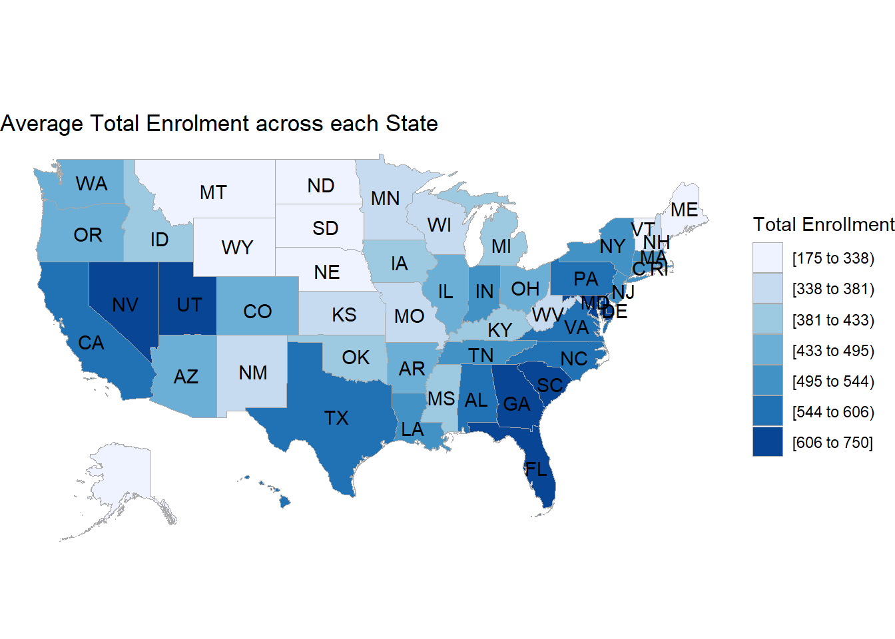

Code
library(openintro)
library(dplyr)
library(tidyr)
library(tibble)
library(ggplot2)
library(choroplethr)
library(scales)
library(parcoords)
library(ggplot2)library(openintro)
library(dplyr)
library(tidyr)
library(tibble)
library(ggplot2)
library(choroplethr)
library(scales)
library(parcoords)
library(ggplot2)data = read.csv("Data/Public_School_Characteristics_2020-21.csv")
data1 = data %>% drop_na(TOTAL)
data1 <- data1 %>%
mutate(ULOCALE = sub(".*(Town|City|Rural|Suburb).*","\\1", ULOCALE,ignore.case = TRUE)) %>%
mutate(TITLEI = sub(".*(Yes|No).*","\\1", TITLEI,ignore.case = TRUE))Implementing these suggestions can contribute to a more flexible and responsive education system that embraces the benefits of both traditional and virtual learning, ensuring an inclusive and effective educational experience for students across all levels.
library(ggplot2)
data_filtered <- data1 %>%
filter(VIRTUAL != "M", !(SCHOOL_LEVEL %in% c("Not Applicable", "Other")))
data_summarized <- data_filtered %>%
group_by(VIRTUAL, SCHOOL_LEVEL) %>%
summarise(count = n())
custom_order <- c("Prekindergarten", "Elementary", "Middle", "Secondary","High", "Adult Education", "Ungraded")
data_summarized$SCHOOL_LEVEL <- factor(data_summarized$SCHOOL_LEVEL, levels = custom_order)
ggplot(data_summarized, aes(x = reorder(VIRTUAL, -count), y = count, fill = VIRTUAL)) +
geom_bar(stat = "identity", position = "dodge") +
labs(title = "Mode of Education across different School Levels",
x = "Mode of Education",
y = "Number of Students",
fill = "Mode of Education") +
theme_minimal() +
facet_wrap(~SCHOOL_LEVEL, scales = "free_y") +
theme(axis.text.x = element_text(angle = 45, hjust = 1))These suggestions aim to enhance the effectiveness and inclusivity of Title I programs, addressing specific trends and dynamics observed in the distribution of students with and without Title I entitlement across various education levels.
library(ggplot2)
data_filtered <- data1 %>%
filter(TITLEI != "M", !(SCHOOL_LEVEL %in% c("Not Applicable", "Other")))
# Sum the instances across school levels
data_summarized <- data_filtered %>%
group_by(TITLEI, SCHOOL_LEVEL) %>%
summarise(count = n())
custom_order <- c("Prekindergarten", "Elementary", "Middle", "Secondary","High", "Adult Education", "Ungraded")
data_summarized$SCHOOL_LEVEL <- factor(data_summarized$SCHOOL_LEVEL, levels = custom_order)
# Plotting with facet_wrap
ggplot(data_summarized, aes(x = reorder(TITLEI, -count), y = count, fill = TITLEI)) +
geom_bar(stat = "identity", position = "dodge") +
labs(title = "TITLE I Entitlement Status across different School Levels",
x = "TITLE I Entitlement Status",
y = "Number of Students",
fill = "TITLE I Entitlement Status") +
theme_minimal() +
facet_wrap(~SCHOOL_LEVEL, scales = "free_y")These suggestions aim to guide educational policymakers and institutions in leveraging the inferences drawn from the data to enhance the overall effectiveness of educational programs and resource allocation.
library(ggplot2)
# Assuming your data frame is named 'your_data'
# Adjust the column names accordingly
# Bin the student-teacher ratio into 10% bins
your_data <- data1 %>%
mutate(Student_Teacher_Ratio_Bin = cut(STUTERATIO, breaks = seq(0, 100, 10), include.lowest = TRUE))
# Sum the total enrollment across schools for each bin
data_summarized <- your_data %>%
group_by(Student_Teacher_Ratio_Bin) %>%
summarise(TOTAL = sum(TOTAL, na.rm = TRUE))
data_summarized <- data_summarized[complete.cases(data_summarized), ]
# Plotting a bar plot
ggplot(data_summarized, aes(x = Student_Teacher_Ratio_Bin, y = TOTAL)) +
geom_bar(stat = "identity", fill = "skyblue") +
labs(title = "Total Enrollment Across Student-Teacher Ratio Bins",
x = "Student-Teacher Ratio Bin",
y = "Total Enrollment") +
theme_minimal()
These suggestions aim to leverage the inferences drawn from the map, addressing specific challenges and enhancing the overall effectiveness of educational programs across diverse states and regions in the United States.
library(tidyverse)
library(usdata)
# Calculate the average student-teacher ratio by state
avg_ratio_by_state <- data %>%
group_by(LSTATE) %>%
summarise(avg_ratio = mean(STUTERATIO, na.rm = TRUE))
avg_ratio_by_state <- avg_ratio_by_state %>%
transmute(region = tolower(usdata::abbr2state(LSTATE)),
value = avg_ratio)
# Check for duplicate entries
duplicates <- avg_ratio_by_state %>% filter(duplicated(region) | duplicated(region, fromLast = TRUE))
if (nrow(duplicates) > 0) {
message("Duplicate entries found. Removing duplicates.")
avg_ratio_by_state <- avg_ratio_by_state[!duplicated(avg_ratio_by_state$region), ]
}
# Plotting the choropleth
state_choropleth(avg_ratio_by_state,
title = "Average Student-Teacher Ratio by State",
legend = "Ratio")
These suggestions aim to leverage the inferences drawn from the analysis, addressing specific challenges and enhancing the overall effectiveness of educational programs across diverse localities and school levels.
library(ggplot2)
data_filtered <- data1 %>%
filter(TITLEI != "M", !(SCHOOL_LEVEL %in% c("Not Applicable", "Other", "Ungraded")))
# Sum the instances across school levels
data_summarized <- data_filtered %>%
group_by(SCHOOL_LEVEL, ULOCALE) %>%
summarise(count = n())
# Plotting with facet_wrap
ggplot(data_summarized, aes(x = reorder(SCHOOL_LEVEL, -count), y = count, fill = SCHOOL_LEVEL)) +
geom_bar(stat = "identity", position = "dodge") +
labs(title = "Grouped Bar Plot for number of student enrolled in different school levels",
x = "School Level",
y = "Number of Students Enrolled",
fill = "School Level") +
theme_minimal() +
facet_wrap(~ULOCALE, scales = "free_y") +
theme(axis.text.x = element_text(angle = 45, hjust = 1))
These suggestions aim to enhance the depth and applicability of the analysis, facilitating informed decision-making for educational policies and planning across the United States.
library(tidyverse)
library(usdata)
# Calculate the average student-teacher ratio by state
avg_ratio_by_state <- data %>%
group_by(LSTATE) %>%
summarise(avg_ratio = mean(TOTAL, na.rm = TRUE))
avg_ratio_by_state <- avg_ratio_by_state %>%
transmute(region = tolower(usdata::abbr2state(LSTATE)),
value = avg_ratio)
# Check for duplicate entries
duplicates <- avg_ratio_by_state %>% filter(duplicated(region) | duplicated(region, fromLast = TRUE))
if (nrow(duplicates) > 0) {
message("Duplicate entries found. Removing duplicates.")
avg_ratio_by_state <- avg_ratio_by_state[!duplicated(avg_ratio_by_state$region), ]
}
# Plotting the choropleth
state_choropleth(avg_ratio_by_state,
title = "Average Total Enrolment across each State",
legend = "Total Enrollment")
These suggestions aim to enhance the depth of the analysis, ensuring a more comprehensive and context-rich interpretation of Title I entitlement patterns across the United States.
library(tidyverse)
library(usdata)
# Calculate the percentage of "Yes" in the "Title" column by state
percentage_yes_by_state <- data1 %>%
group_by(LSTATE) %>%
summarise(percentage_yes = mean(TITLEI == "Yes", na.rm = TRUE) * 100)
percentage_yes_by_state <- percentage_yes_by_state %>%
transmute(region = tolower(usdata::abbr2state(LSTATE)),
value = percentage_yes)
# Check for duplicate entries
duplicates <- percentage_yes_by_state %>% filter(duplicated(region) | duplicated(region, fromLast = TRUE))
if (nrow(duplicates) > 0) {
message("Duplicate entries found. Removing duplicates.")
percentage_yes_by_state <- percentage_yes_by_state[!duplicated(percentage_yes_by_state$region), ]
}
# Plotting the choropleth
state_choropleth(percentage_yes_by_state,
title = "Percentage of Title I entitled schools by State",
legend = "Percentage")
data_filtered <- data %>%
filter(!is.na(STUTERATIO),STUTERATIO != -1, !is.na(SCHOOL_LEVEL), !(SCHOOL_LEVEL %in% c("Not Applicable", "Other", "Not Reported")))
# Calculate the average student-teacher ratio by school type
avg_ratio_by_type <- data_filtered %>%
group_by(SCHOOL_LEVEL) %>%
summarise(avg_ratio = mean(STUTERATIO))
custom_order <- c("Prekindergarten", "Elementary", "Middle", "Secondary","High", "Adult Education", "Ungraded")
avg_ratio_by_type$SCHOOL_LEVEL <- factor(avg_ratio_by_type$SCHOOL_LEVEL, levels = custom_order)
# Plotting the bar plot
ggplot(avg_ratio_by_type, aes(x = SCHOOL_LEVEL, y = avg_ratio, fill = SCHOOL_LEVEL)) +
geom_bar(stat = "identity") +
labs(title = "Average Student-Teacher Ratio by School Type",
x = "School Level",
y = "Average Student-Teacher Ratio",
fill = "School Level") +
theme_minimal() +
theme(axis.text.x = element_text(angle = 45, hjust = 1))
library(ggalluvial)
# Assuming your data frame is named 'data'
# Adjust the column names accordingly
sampled_data <- data1 %>%
sample_n(100, replace = FALSE) %>%
filter(!is.na(STUTERATIO),STUTERATIO != -1, !is.na(SCHOOL_LEVEL), !(SCHOOL_LEVEL %in% c("Not Applicable", "Other", "Not Reported")), !(TITLEI %in% c("M")), !(VIRTUAL %in% c("M")))
# Filter out rows with missing values
data_filtered <- sampled_data %>%
filter(!is.na(ULOCALE), !is.na(SCHOOL_LEVEL), !is.na(SCHOOL_TYPE_TEXT))
# Create an alluvial diagram
alluvial_plot <- ggplot(data_filtered,
aes(axis1 = ULOCALE, axis2 = SCHOOL_LEVEL, axis3 = TITLEI, axis4 = VIRTUAL, y = TOTAL)) +
geom_alluvium(aes(fill = ULOCALE)) +
geom_stratum() +
labs(title = "Average Student-Teacher Ratio by School Type",
axis1 = "Type of Locality", axis2 = "School Level", axis3 = "TITLE I Entitlement", axis4 = "Mode of Education",
y = "Average Student-Teacher Ratio",
fill = "Locality Type") +
geom_text(stat = "stratum", aes(label = after_stat(stratum))) +
theme_minimal()
# Print the alluvial diagram
print(alluvial_plot)
data2 <- select(data1, c("AMALM","AMALF","ASALM", "ASALF","BLALM","BLALF","HPALM","HPALF","HIALM","HIALF","TRALM", "TRALF" ,"WHALM" ,"WHALF"))
data2 <- as.data.frame(sapply(data2, as.numeric))
sums_df <- data.frame(t(colSums(data2, na.rm = TRUE)))
colnames(sums_df) <- colnames(data2)
reshaped_df <- sums_df %>%
pivot_longer(cols = everything(), names_to = c("Race", ".value"), names_pattern = "(..)(...)")
reshaped_df <- tidyr::gather(reshaped_df, key = "Gender", value = "Value", -Race)
reshaped_df$Gender[reshaped_df$Gender == "ALM"] <- "Male"
reshaped_df$Gender[reshaped_df$Gender == "ALF"] <- "Female"
custom_order_r <- c("WH","HI","BL","AS","TR","AM","HP")
reshaped_df$Race <- factor(reshaped_df$Race, custom_order_r)
custom_labels <- c("White","Hispanic","African American","Asian","Two or More races","American Indian","Native Hawaian")
ggplot(reshaped_df, aes(x = Race, y = Value, fill = Gender)) +
geom_bar(stat = "identity", position = "dodge") +
labs(title = "Male & Female Enrollment across every race",
x = "Race",
y = "Enrollment") +
scale_fill_manual(values = c("Female" = "pink", "Male" = "blue")) +
theme(
plot.title = element_text(hjust = 0.5),
axis.text.x = element_text(angle = 45, hjust = 1)
)+
scale_x_discrete(labels = custom_labels)
data_r <- select(data1,c("LSTATE","AM","AS","BL","HP","HI","WH"))
colnames(data_r)[which(names(data_r) == "AM")] <- "American Indian"
colnames(data_r)[which(names(data_r) == "AS")] <- "Asian"
colnames(data_r)[which(names(data_r) == "BL")] <- "African American"
colnames(data_r)[which(names(data_r) == "HP")] <- "Native Hawaian"
colnames(data_r)[which(names(data_r) == "HI")] <- "Hispanic"
colnames(data_r)[which(names(data_r) == "WH")] <- "White"
result_r <- data_r %>%
group_by(LSTATE) %>%
mutate(across(everything(), ~mean(.,na.rm = TRUE))) %>%
distinct()
parcoords(
result_r,
rownames = FALSE,
brushMode = "1D-axes"
)data_n <- select(data1,c("ULOCALE","AM","AS","BL","HP","HI","WH"))
colnames(data_n)[which(names(data_n) == "AM")] <- "American Indian"
colnames(data_n)[which(names(data_n) == "AS")] <- "Asian"
colnames(data_n)[which(names(data_n) == "BL")] <- "African American"
colnames(data_n)[which(names(data_n) == "HP")] <- "Native Hawaian"
colnames(data_n)[which(names(data_n) == "HI")] <- "Hispanic"
colnames(data_n)[which(names(data_n) == "WH")] <- "White"
result_n <- data_n %>%
group_by(ULOCALE) %>%
mutate(across(everything(), ~sum(.,na.rm = TRUE))) %>%
distinct()
result_n <- pivot_longer(result_n, cols = c("American Indian","Asian","African American","Native Hawaian","Hispanic","White"), names_to = "Race", values_to = "Enrollment")
ggplot(result_n, aes(x = ULOCALE, y = Enrollment, fill = Race)) +
geom_bar(stat = "identity", position = "dodge") +
facet_wrap(~ Race,scales = "free_y", ncol = 2) +
labs(title = "Enrollment by Race and Locality",
x = "Locality",
y = "Enrollment") +
theme(plot.title = element_text(hjust = 0.5))